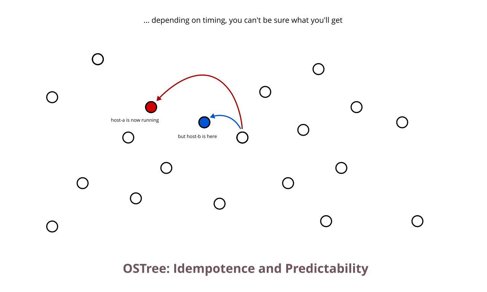
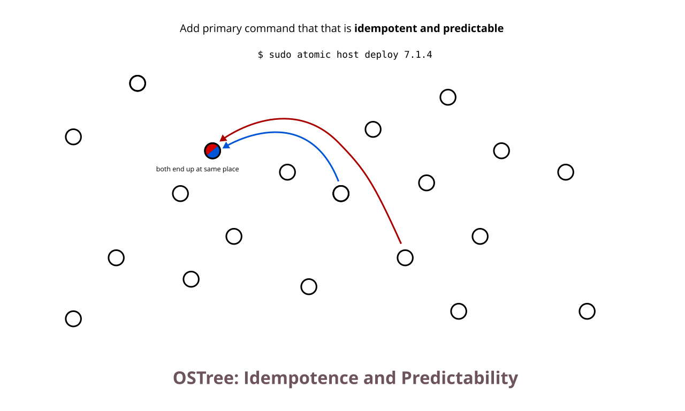
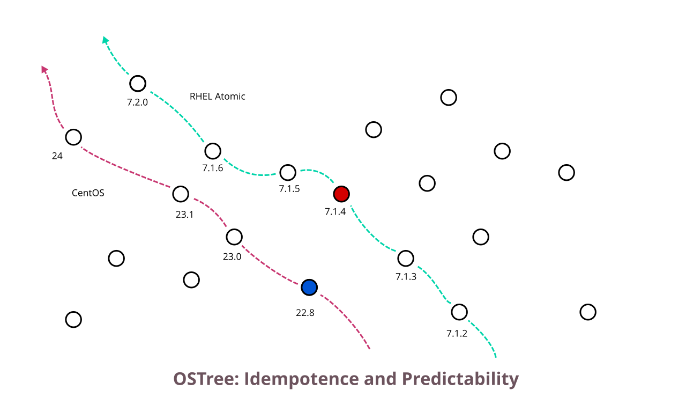
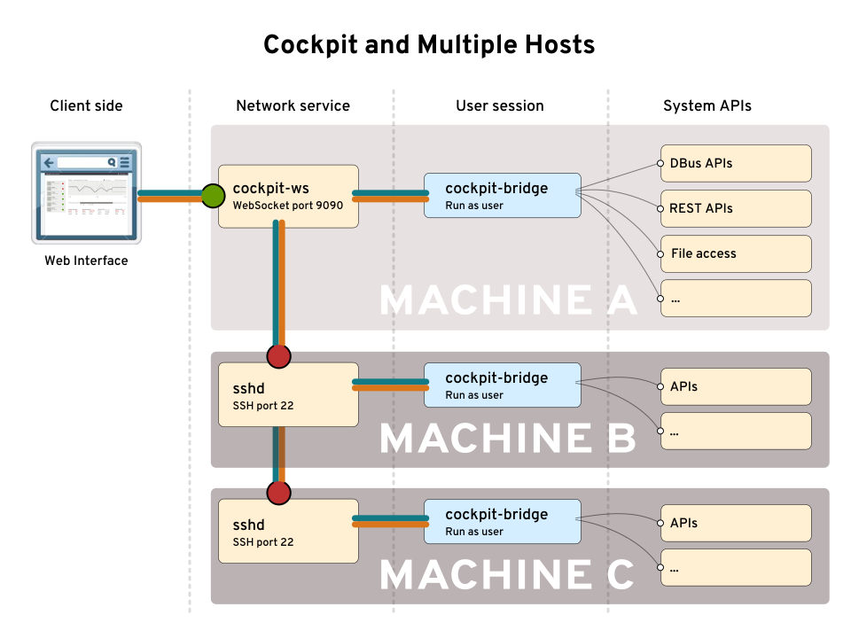

Cockpit is a
Linux admin interface
Cockpit is a
remote interactive
Linux admin interface

Zero footprint
Goals:
1. Linux usable
by non-expert admins
2. Complex Linux features
discoverable
RPM OSTree
Software updates on Atomic Hosts
TODO: VIDEO
Issues
Multi-User safety
DBUS Api and OSTree locking


Want useable APIs?
Add them to cockpit
Still to come
- Deploying arbitrary versions
- Rebase support
- Improve multi-OS support

Managing Containers
with Kubernetes/Openshift
Kubernetes:
Container Orchestration
Openshift:
Kubernetes+
Goals:
1. Make kubernetes features discoverable
2. Provide a UI for common administrative use cases
Installation
Already running Cockpit on your nodes?
- Install as a normal cockpit package
- Uses the logged in users api authorizations
Installation
Without Cockpit on your nodes?
- Install as a stand alone unprivileged Docker container or a Kubernetes Pod
- Uses the logged in users api authorizations
Container Configuration
Environment Variables + Downward API
TODO: LOGIN VIDEO
TODO: Video of features.
TODO: Video of killing service
Coming improvements
- Better support for non-cluster admin users.
- Project and User management in openshift
- UI for openshift registry
Needed Kubernetes Improvments
- Discoverable external urls.
- Safer authentication defaults
Mooo!
Cockpit and Atomic

Combinatorial Explosion

10,000 testing instances a day
Test virtual machines
run in
Docker containers
Packaging Upstream
QE Testing Upstream
Packaging Upstream
QE Testing Upstream
CI = Upstream
Continuous Delivery
Sign a tag Becomes a release
- Tarballs
- Koji scratch build
- Fedora commit
- Koji build
- COPR builds
- Debian packaging
- Docker Hub containers
- Upload documentation
The real magic of continous
happens before you merge
cockpit-project.org
#cockpit on Freenode
github.com/cockpit-project/cockpit